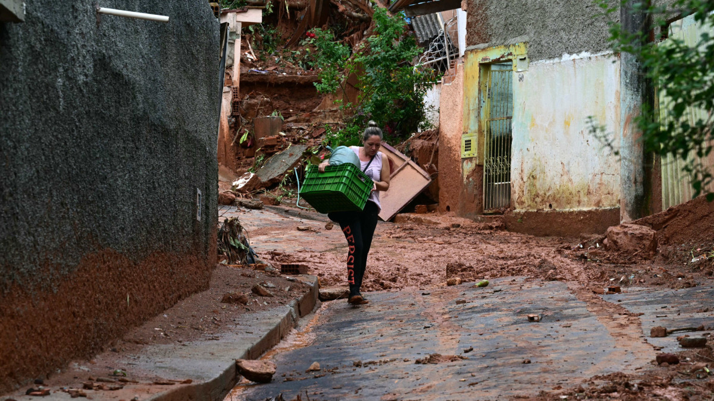
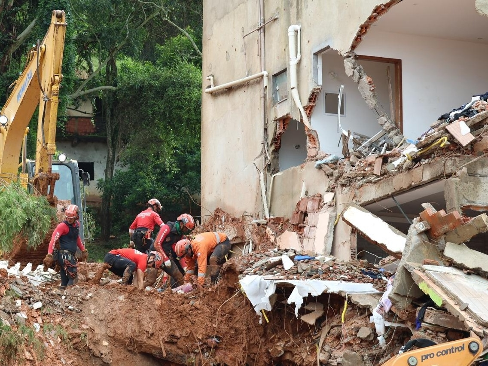
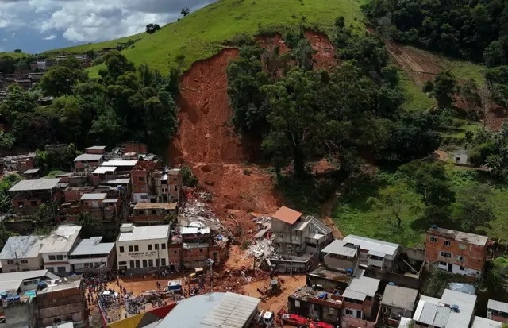
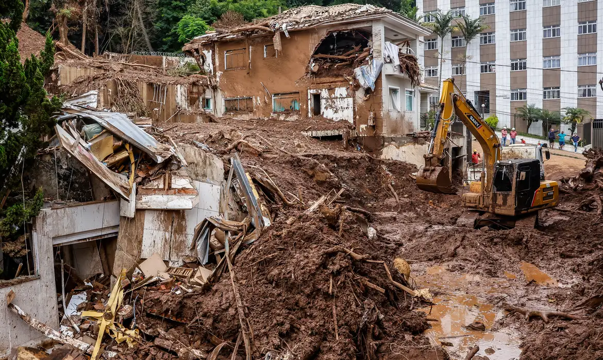
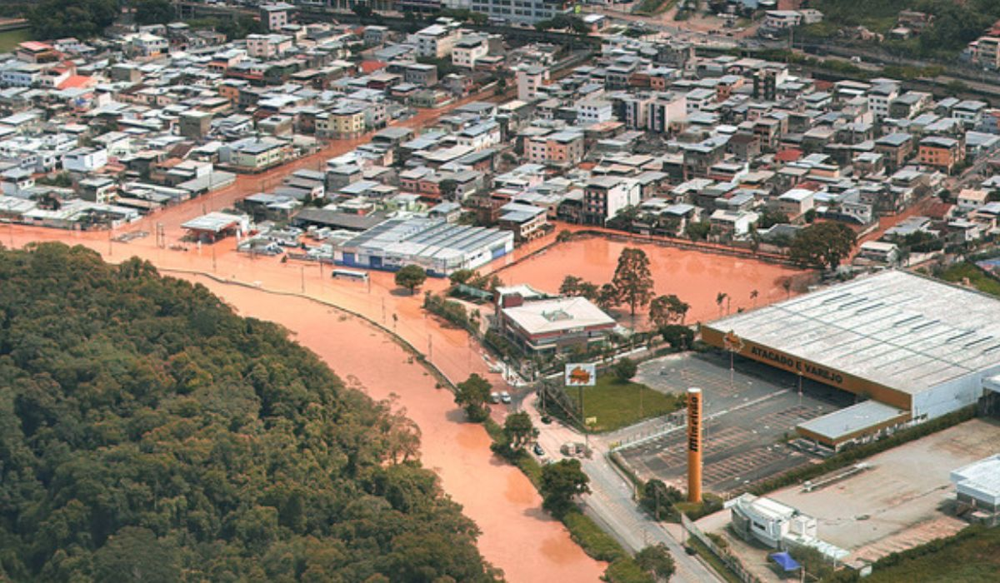
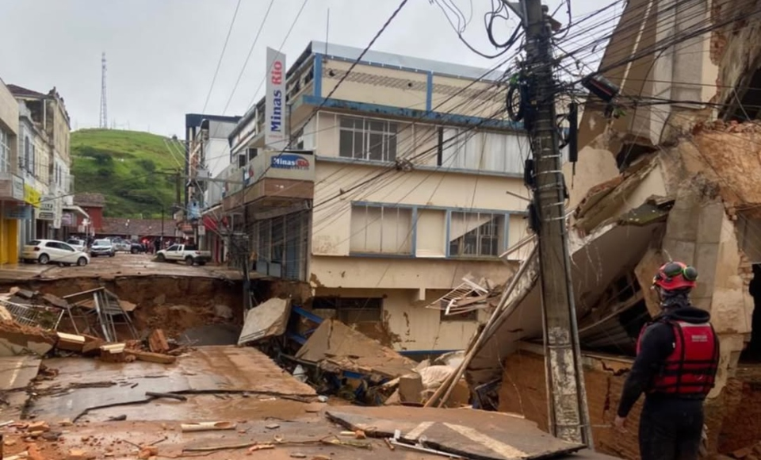
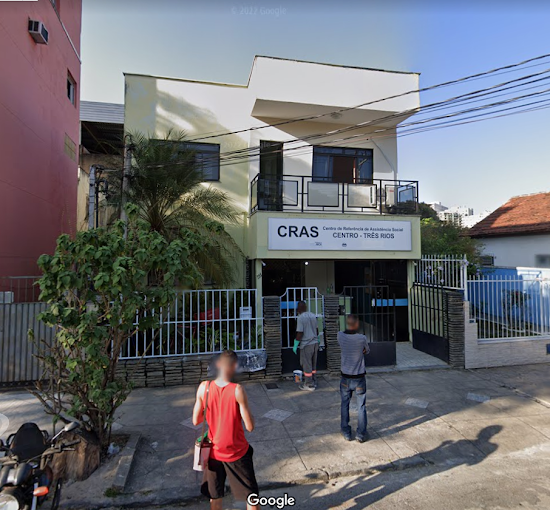

DESASTRE TEMPORAL
No dia 23 de fevereiro de 2026, as cidades de Juiz de Fora e Matias Barbosa, em Minas Gerais, foram atingidas por fortes chuvas que provocaram alagamentos e deslizamentos de terra em diversos bairros. Centenas de moradores foram afetados, com perdas materiais que incluem imóveis, veículos, roupas e outros bens. As áreas mais atingidas registraram ruas inundadas e riscos estruturais, levando à atuação de equipes de emergência para atendimento às ocorrências.
Devido à intensidade da tempestade, diversos moradores ficaram soterrados e outros perderam a vida. A tragédia marcou um dos momentos mais críticos já enfrentados pela região. A prefeita de Juiz de Fora, Margarida Salomão, lamentou o ocorrido e destacou a gravidade da situação: “Hoje é o dia mais triste dos meus cinco anos e dois meses de governo, pois é a primeira vez que registramos perdas de vidas decorrentes desses fenômenos climáticos, como os deslizamentos de encostas”, afirmou. Confira as imagens.







Em razão a esse acontecimento, a prefeitura de Três Rios está arrecadando donativos auxliares.
Confira como você pode ajudar!
O QUE DOAR?
O impacto das fortes chuvas foi devastador, causando a perda de mantimentos, roupas e diversos itens de primeira necessidade. Milhares de famílias enfrentam um momento extremamente delicado e muitas crianças estão sem alimentos e fraldas. A Prefeitura conta com a sua solidariedade neste momento tão difícil. Confira lista de itens necessários e os locais de arrecadação onde você pode entregar seus donativos.
- Água mineral;
- Roupas;
- Artigos de higiene pessoal;
- Alimentos não perecíveis;
- Fraldas;
- Cobertores;
- Demais itens de primeira necessidade.
LOCAIS PARA DOAÇÃO
.jpg)
CRAS Habitat
Rua N, 111
Bairro Habitat, Três Rios
Segunda a sexta-feira, das

CRAS Bemposta
Rua Werneck, s/n
Distrito de Bemposta, Três Rios
Segunda a sexta-feira, das

CRAS Triângulo
Rua Santo Antônio, 200
Bairro Triângulo, Três Rios
Segunda a sexta-feira, das

CRAS Vila Isabel
Rua Professor Moreira, s/n
Bairro Vila Isabel, Três Rios
Segunda a sexta-feira, das
Paróquia de São Sebastião
Rua Quinze de Novembro, 599
Bairro Centro, Três Rios
Segunda a sexta-feira, das

CRAS Centro
Rua Doutor Antônio Carlos, 228
Bairro Centro, Três Rios
Segunda a sexta-feira, das
Prefeitura Três Rios cuidando de você!
Siga nossas redes Sociais.